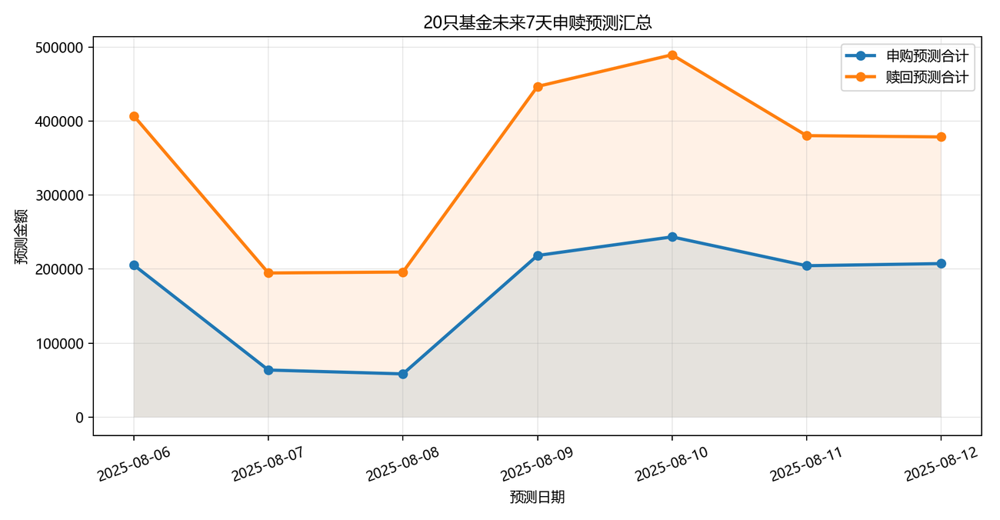
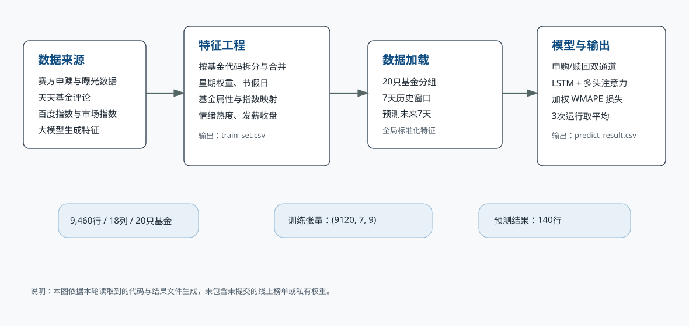
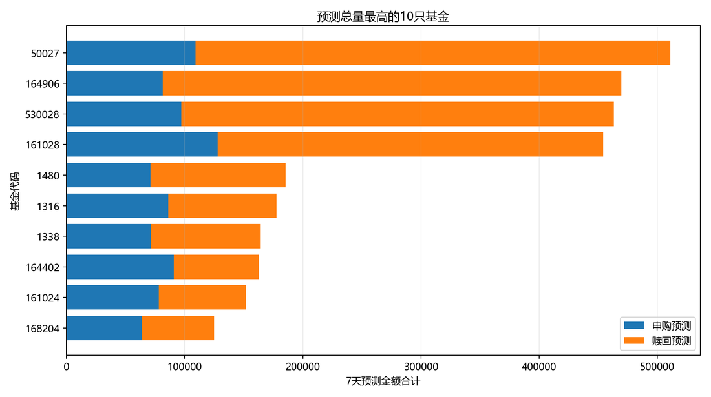
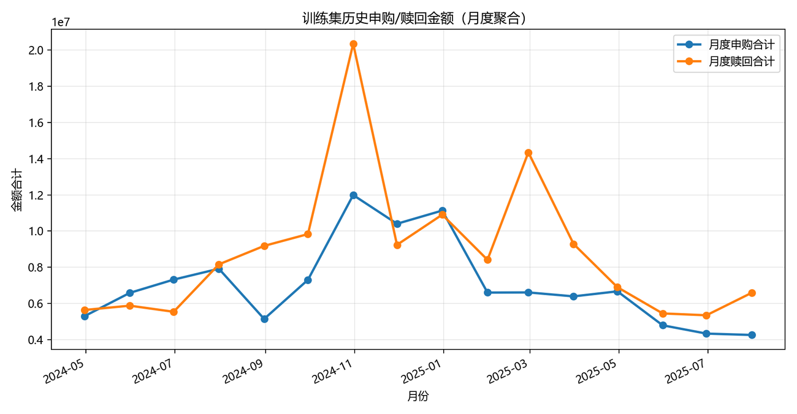
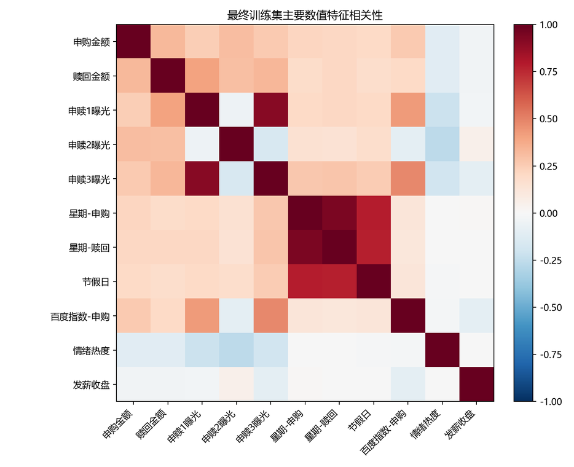
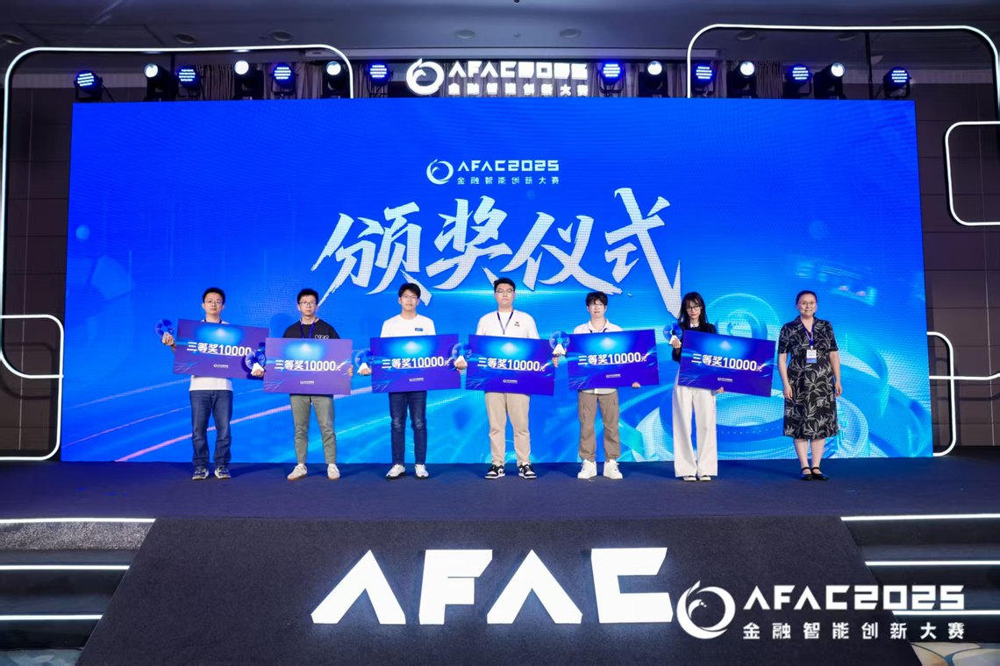
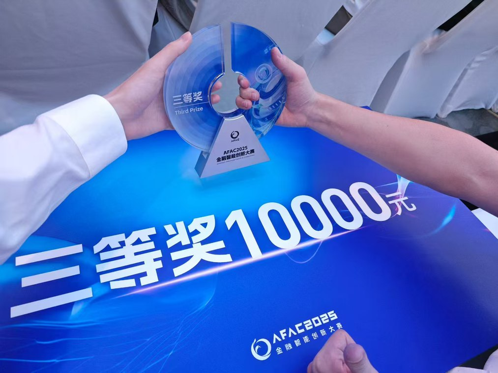
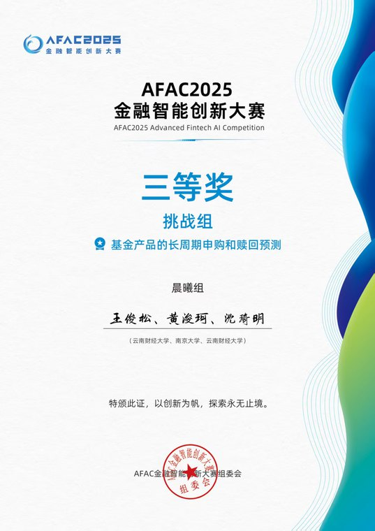

AFAC2025 金融智能创新大赛 · 晨曦组
基金产品长周期申购与赎回预测
多源特征工程、LSTM-Attention 双通道建模，面向 20 只基金输出未来 7 天申购与赎回预测，并完成竞赛路演交付。
PythonPyTorch时间序列预测金融数据建模特征工程
赛程数据
9,460 行最终训练集
20 只覆盖基金
18 列训练字段
140 条预测结果
架构与数据流

从赛题数据到预测交付
项目将基金申赎曝光、百度指数、市场指数、节假日、发薪日概率与情绪特征对齐到基金-日期维度，再用 7 天历史窗口预测未来 7 天资金流。
- 申购与赎回采用双通道建模，降低两个目标之间的信号混淆。
- 注意力层用于提取时间窗口内的重点波动和节奏变化。
- 输出结果转化为图表和路演材料，支撑现场讲解。
结果图表

基金预测结果 Top10

训练数据月度变化

主要特征相关性
路演与证书

颁奖仪式

奖金奖杯
